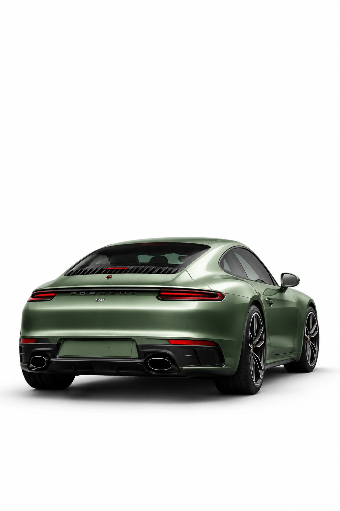
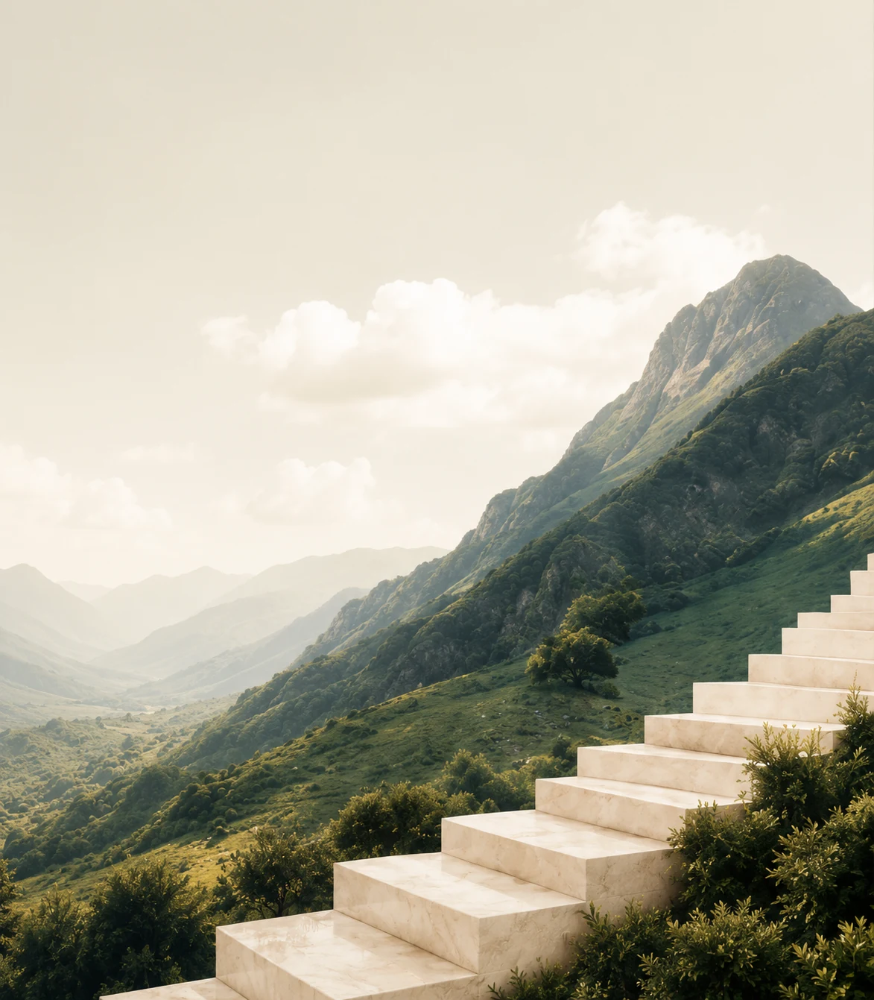

Kolo homepage concepts
Three homepage directions for Kolo.
I created three possible first impressions for Kolo: a clear product-led page, a sharper market-signal page, and a warmer investor-facing page. The aim is to make the first version of the brand feel considered, specific, and ready to build on.
Compare the routes.
The layouts test three ways to introduce Kolo: explain the product fast, make market intelligence feel sharper, or build trust with long-term investors.

Make the product easy to understand.
A homepage built around thesis briefs, watchlists, and portfolio health. It explains Kolo as a practical investor intelligence tool and shows how the product could fit into someone's research routine.
View page ->Turn market noise into clear signals.
A high-contrast route for active investors who want quick context. Alert-style sections, signal cards, and archive tiles make Kolo feel fast, focused, and intelligence-led.
View page ->
Give investing a clearer entry point.
A warmer direction for long-term investors. It frames Kolo around research habits, clearer decisions, and a more premium advisory feel.
View page ->